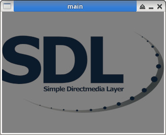

參考資訊：
https://github.com/veandco/go-sdl2
https://github.com/veandco/go-sdl2-examples
https://pkg.go.dev/github.com/veandco/go-sdl2#section-readme
初始化
$ go version
go version go1.24.4 linux/amd64
$ go mod init main
main.go
package main
import "github.com/veandco/go-sdl2/sdl"
import "github.com/veandco/go-sdl2/img"
func main() {
sdl.Init(sdl.INIT_EVERYTHING);
defer sdl.Quit()
window, _ := sdl.CreateWindow("main", 0, 0, 320, 240, sdl.WINDOW_SHOWN)
defer window.Destroy()
renderer, _ := sdl.CreateRenderer(window, -1, sdl.RENDERER_ACCELERATED)
defer renderer.Destroy()
png, _ := img.Load("main.png")
png.SetAlphaMod(128)
t, _ := renderer.CreateTextureFromSurface(png)
defer png.Free()
defer t.Destroy()
renderer.Clear()
renderer.Copy(t, nil, nil)
renderer.Present()
sdl.Delay(3000)
}
執行
$ go mod tidy $ go run -v main.go
